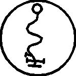

Kırk dördüncü İsim KINMA’dır
Tanrıların, ismini duyunca korku ile sarsıldıkları Tanrısı ve Yargıcıdır. Öyle ki Tanrılar hata yapamaz, bu Güç onların faaliyetlerine nezaret etmek için verilmiştir, kanunlara ve Aktin doğasına uygun davranmaları gereklidir, çünkü Tanrılar unutkandır ve çok uzaktadır. Kelimesi ENGAIGAI’dır ve mührü budur:
